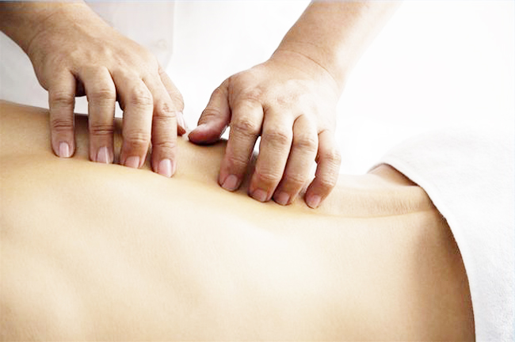

Мануальный терапевт С.В. Чечиль
Наша клиника мануальной терапии основывает свою работу на взаимодействии с пациентом, а не на воздействии на него. Пациента посвящают во все особенности лечебного процесса для достижения положительного результата. Благодаря этому наши пациенты спокойны и уверены в будущем, что гарантирует быстрое выздоровление.
Мануальная терапия является современной медицинской специальностью, которая включает в себя разнообразные методы и способы лечения, направленные на профилактику, лечение и комплексное восстановление организма. Лечебный процесс проводит опытный мануальный терапевт, вследствие чего мобилизируются внутренние ресурсы организма, достигается быстрый благоприятный эффект.
Показания к мануальной терапии
Мануальная терапия необходима людям, страдающим заболеваниями опорно-двигательного аппарата, которые сопровождаются болевыми синдромами. Цель терапии - повышение качества жизни пациента, восстановление утраченных функций, избавление от заболеваний. Данная методика является безопасной, эффективной и прекрасно работает в тех случаях, где не справляется классическая медицина. Используемые методы дают возможность легко избавиться от любых проблем со здоровьем.
Преимущества нашей клиники мануальной терапии:
- Высококвалифицированные специалисты.
- Индивидуальный подход к пациентам, ориентация на личностные потребности и переживания касательно лечения.
- Комплексное методик для мягкого и щадящего воздействия.
- Лечение всех возрастных групп.
- Гарантированный эффект от лечения.
- Лояльные цены.
- Полная ответственность персонала.
Основные направления мануальной клиники в лечении:
- Заболевания спины и позвоночника (сколиоз, остеохондроз, радикулит, кифоз, грыжи, протрузии).
- Головные боли различного характера, в том числе после травм.
- Заболевания суставов.
- Реабилитация и восстановление организма после операций и травм.
- Прочие боли различного характера и локализации.
В лечении используется комплексная комбинация различных методик, благодаря чему достигается желаемый эффект. Только своевременное обращение в клинику мануальной терапии позволит быстро избавиться от заболеваний и полностью восстановить здоровье и ресурсы организма.
Моделирующий (аппаратный) массаж, коррекция фигуры.
Независимо от техники исполнения массажа, данная процедура оказывает следующее воздействие на организм:
- Улучшает кровоснабжение;
- Устраняет застойные явления;
- Расслабляет мышечную систему;
- Способствует разрушению жировых клеток;
Благодаря этому достигается стойкий эффект ровной, подтянутой и упругой кожи, а также наблюдается быстрое уменьшение объемов тела. Массаж тела для проблемных зон является отличной альтернативой традиционным методам похудения – диетам и специальным упражнениям, так как он не наносит вреда здоровью людей, которые в погоне за стройной фигурой могут пренебречь индивидуальными противопоказаниями и сорвать работу ЖКТ изнурительным пищевым ограничением или ухудшить состояние опорно-двигательного аппарата, перенося чрезмерные нагрузки.
Читать полностью...Курсы по кинезиотейпу
На протяжении жизни, человек постоянно сталкивается с такими проблемами как травмы, полученные как в бытовых условиях, так и в спорте или на отдыхе, боли в спине, мышцах, суставах, головные боли после тяжелого рабочего дня, отеки ног и многое другое.
Схема борьбы с подобными недугами у большинсва людей одинаковая: таблетка обезболивающего или специальная мазь. Однако такие способы не всегда эффективны и безвредны: у таблеток есть масса противопоказаний и побочных действий, а мази и гели зачастую не оказывают должного эффекта.
Существует еще один простой и безопасный способ избавления от боли, гематом и отеков, давно применяемый профессиональными спортсменами и активно транслируемый средствами массовой информации-это кинезиотейпирование.
Бесплатная консультация
Так же Вы сможете пройти бесплатную консультацию у специалистов клиники!
И сможете приобрести кинезиотейп.
Стоимость курса: 1 500 рублей.
Запись по телефону 8 (495) 741-84-94.
Расписание курсов уточняйте по телефону.
Данный курс не позволяет Вам использовать кинезиотейпы профессионально.
Центр мануальной терапии
Мануальная терапия, выполняемая руками квалифицированного специалиста, имеет широчайший спектр положительного воздействия на опорно-двигательный аппарат.
Курсы подобных процедур способны убрать чувство скованности движений, устранить боли в спине,боли суставах, облегчить состояние при целом ряде заболеваний, а также улучшить общее самочувствие и скорректировать осанку.
В клинике мануальной терапии доктора Сергея Вячеславовича Чечиля работают только высококвалифицированные специалисты с большим опытом работы и массой довольных вылеченных пациентов, среди которых – участники олимпийской сборной России.
Специалисты клиники с радостью помогут Вам при таких ситуациях, как:
- искривления позвоночника;
- головные боли;
- грыжи дисков позвоночника;
- острые и хронические боли в спине;
- боли после травм спины, шеи, грудной клетки, конечностей;
- висцеральные нарушения;
- боли в стопах, коленях;
- онемение в конечностях;
- функциональные нарушения пищеварения, связанные с дисфункциями позвоночника и самих органов;
- и др.
При первом обращении в нашу клинику опытный специалист оценит ваше состояние и подберет для вас индивидуальную комплексную программу процедур, которая включит необходимое в Вашей ситуации количество сеансов мануальной терапии. Уже после первого сеанса вы почувствуете улучшение самочувствия, но для того чтобы получить максимальный эффект, следует пройти полный курс терапии, который включает в себя от 8 до 12 процедур.
Поздравляем Юлию Белорукову с медалью на Олимпийских Играх!

За две недели до олимпиады была готова всё бросить
– За весь сезон вы лишь однажды становились призером Кубка мира, причем еще в ноябре. Что происходило потом?
– Я сразу сказала Маркусу, что хочу в первом же старте решить задачу отбора на Олимпийские игры. А дальше уже спокойно выступать и ни о чем не думать. Поначалу...
За две недели до олимпиады была готова всё бросить
– За весь сезон вы лишь однажды становились призером Кубка мира, причем еще в ноябре. Что происходило потом?
– Я сразу сказала Маркусу, что хочу в первом же старте решить задачу отбора на Олимпийские игры. А дальше уже спокойно выступать и ни о чем не думать. Поначалу...
Юбилейный чемпионат по лыжным видам спорта
Мы принимали активное участие в подготовке Никиты Крюкова и Сергея Устюгова к этому чемпионату. Никита Крюков проходил реабилитацию в нашей клинике. Оба спортсмена выиграли командный спринт в индивидуальных стельках изготовленных в нашей клинике.
Также Никита дал интервью каналу "Матч ТВ", где в числе прочих тем рассказал о своей больной спине и о том, как доктор Чечиль помог ему завоевать победу.
Наши партнёры


US Medica
Благодаря применению специальных ручных манипуляций чувство скованности и боль в спине проходят, а суставы и позвоночник становятся более гибкими и подвижными.
Мануальный терапевт подберет подходящую методику лечения в зависимости от вашей ситуации (например, терапию с использованием рывков и встряхиваний, позволяющую «разблокировать» позвонки, или мягкую терапию, более плавную и ритмичную).
Приемы мануальной терапии помогают справиться с заболеваниями:
- Остеохондроз;
- Искривление позвоночника;
- Межпозвоночная грыжа;
- Радикулит;
- Травмы спины, грудной клетки и шеи;
- Патологические повреждения позвоночника.
Тренажер для растяжки позвоночника Air Nobius
Функциональная значимость пояснично- крестцового отдела позвоночника очень велика. К сожалению, около 25% людей с болью в спине жалуются на боли именно в этом отделе. Факторами риска являются повторяющаяся однообразная физическая активность, длительные статические нагрузки, сидячий образ жизни, возраст и т.д. Все это приводит к блокировке движения в пояснично-кресцовом отделе.
Читать полностью...
Диск постепенно теряет эластичность, из-за чего может возникнуть протрузия и образоваться межпозвоночная грыжа. Располженный между позвонками диск имеет эластичную структуру и выполняет в первую очередь функцию амортизатора. К сожалению, со временем происходит изнашивание дисков и их дегенерация.
Статьи
Мануальная терапия
Благодаря применению специальных ручных манипуляций чувство скованности и боль в спине проходят, а суставы и позвоночник становятся более гибкими и подвижными.
Мануальный терапевт подберет подходящую методику лечения в зависимости от вашей ситуации (например, терапию с использованием рывков и встряхиваний, позволяющую «разблокировать» позвонки, или мягкую терапию, более плавную и ритмичную).
Приемы мануальной терапии помогают справиться с заболеваниями:
- Остеохондроз;
- Искривление позвоночника;
- Межпозвоночная грыжа;
- Радикулит;
- Травмы спины, грудной клетки и шеи;
- Патологические повреждения позвоночника.
Не ждите, когда заболит
Даже если вы уверены, что с вашей спиной все в порядке, 1-2 раза в год посещайте кабинет мануальной терапии. Особенно если вы…
…офисный работник.Долгое пребывание в сидячем положении вредно ведет к нарушению работы позвоночника, суставов и мышц.
…часто поднимаете тяжести.Если отказаться от этой затеи невозможно, следите, чтобы нагрузка на позвоночник распределяется равномерно.
…стали сутулиться.Ваше неправильно оборудованное рабочее место может стать причиной нарушения осанки. Кстати, сутулость ухудшает не только здоровье, но и ваш внешний вид (плечи стягиваются вперед, живот начинает вываливаться, вы становитесь ниже и кажетесь неуверенными).